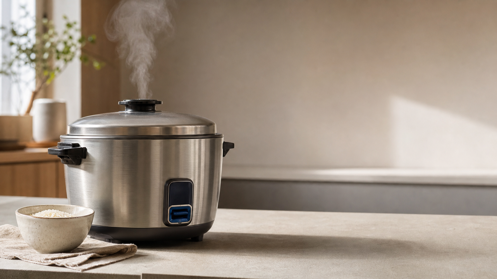
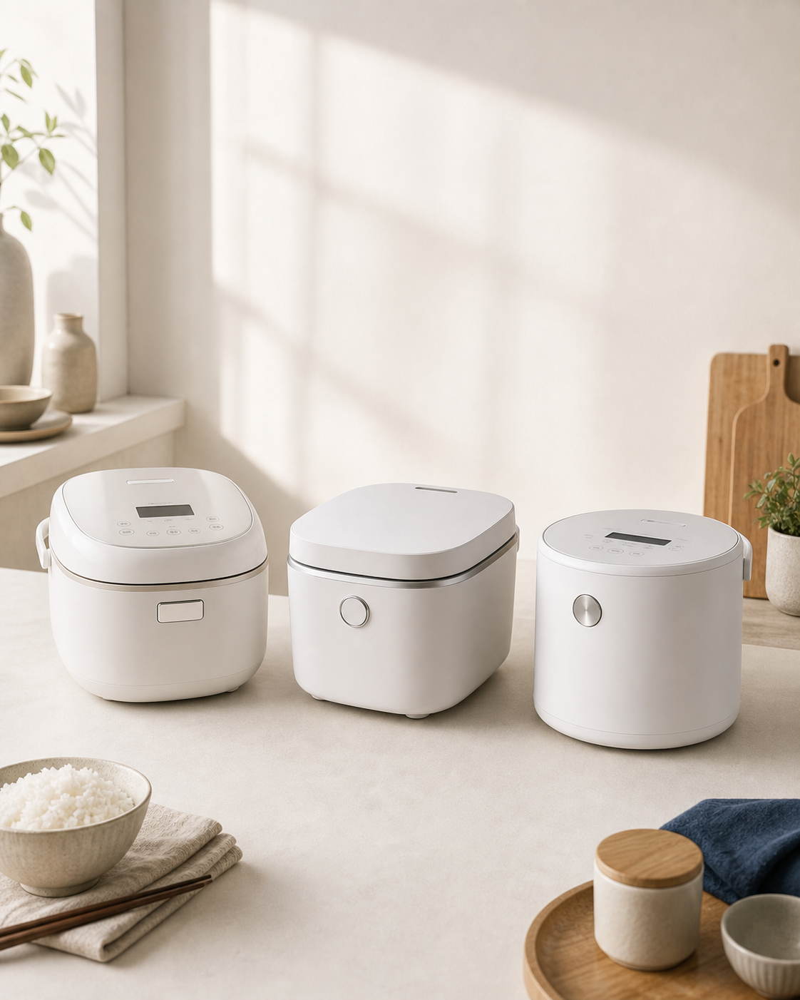
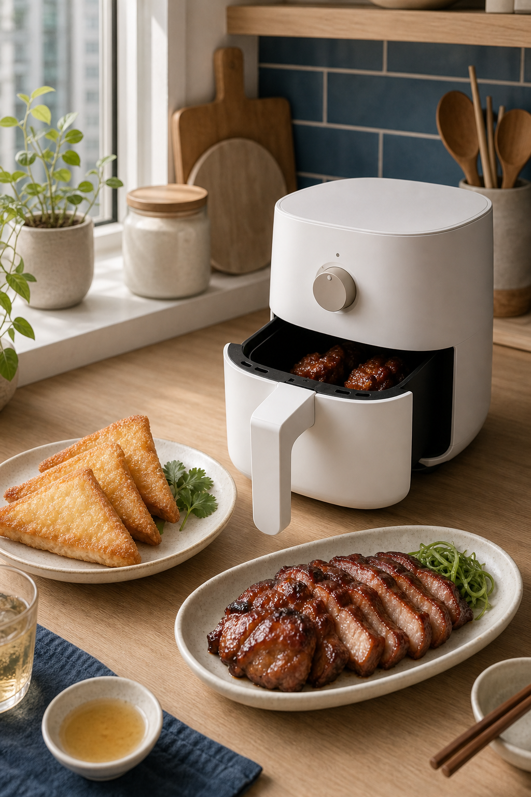
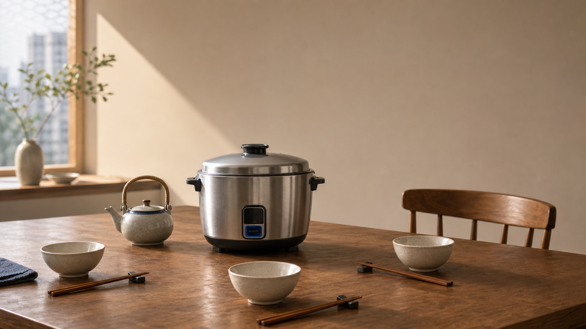

Mid-size HK brands like Imarflex sit between mainland low-cost entrants and locked-in Japanese mindshare. 2026 changes the rules in three directions — all at the same time.
Macro market scan → category bet → topic discovery → scoring → AEO format check → brief → production. Each step refuses to ship if its hard rule fails.
Benchmarked 2026-05-27 against 16 reputable 2025-2026 industry sources (Brafton, Digital Applied, Wellows, Inspired Monks, Sequenzy, Meltwater, Marketing-Interactive, Yotpo, Shopify, McKinsey, others).
imarflex-aeo skill + auditor agent on 2026-05-27. Closes the 37% AI-discovery gap.Quarterly macro scan of 7 public sources. Distils ~480 keyword signals into a 5-10 bullet "Market context" block that feeds Step 1.
Real timeline from our Q2 build. Demonstrates how the workflow gets better when initial fetch fails.
| Date | Action | Result |
|---|---|---|
| 2026-05-23 | First Q2 scan attempt via WebFetch + 3 browser-automation tools | HTTP 429 on all 3 tools — IP-level rate limit. Marked "best-effort, often unavailable". |
| 2026-05-27 | Re-tested agent-browser CLI (Playwright) with ?date=today 1-m (30-day window instead of default 12-month) | SUCCESS — full 30-day series + Related Rising 10 queries for 電飯煲 HK |
| 2026-05-27 | Captured rising queries: panasonic 電飯煲 內膽 Breakout, 小米 IH 電飯煲 Breakout, plus cuckoo / 美的 / 松井 / tefal — all entering same window | 3 Q2 decisions strengthened, 1 thesis flagged for cross-check |
| 2026-05-30 | Compare test: 電飯煲 vs 迷你 電飯煲 vs 2L 電飯煲 — to validate capacity-gap thesis | Generic 電飯煲 = avg 63, 迷你 = avg 1, 2L = avg 1. HK users don't search by capacity phrase. |
| 2026-05-30 | Thesis reframed: capacity gap is product-shelf gap (real), not search-demand gap (zero). Content angle pivot. | IRC-20IH score 16/18 → 17/18 — Demand axis upgraded with confidence |
sources-public.md. 24-seed HK list saved as seed-list-hk.md. Rate-limit operational rules in cadence-and-triggers.md.Two-level model: Quarter focus = thesis (categories + DTC moats). Monthly focus = bet placement (this month's promo, content, diff from quarter). Both anchored by 6-dim hero SKU rubric.
yyyy-qx-focus.mdyyyy-mm-focus.mdQ2 2026 worked example. Every hero candidate scored 1-3 on 6 axes. Any axis = 1 → auto-DQ regardless of total.
| Axis | Score | Reasoning |
|---|---|---|
| M×I (margin × inv) | 2 ⚠️ | Placeholder pending real margin from client |
| Demand | 3 ✅ | Mother's Day peak 100 + 中容量 family-size moment |
| Diff | 3 ✅ | Product-shelf gap + 日工藝 + DTC moat |
| Content readiness | 3 ✅ | Buying-guide + carousel already drafted |
| DTC moat fit | 3 ✅ | 2-yr warranty + parts-finder anchor |
| Brand safety | 3 ✅ | No reliability concerns surfaced |

Q2 2026-05-30 sample: 5 IH topics surfaced from Trends + media + retailer signals. Scored. Winner picked for Step 5 brief.
| Topic | Biz | Demand | Intent | Fit | Repurp | Rank | Total | Action |
|---|---|---|---|---|---|---|---|---|
| 1. 電飯煲 容量 點揀 | 5 | 5 | 4 | 5 | 5 | 4 | 28 | ✅ Next calendar |
| 2. panasonic 電飯煲 內膽 邊度買 | 5 | 4 | 5 | 5 | 4 | 5 | 28 | ✅ Day-1 post-engagement |
| 3. 電飯煲 母親節 / 父親節 送禮 | 5 | 5 | 5 | 4 | 4 | 4 | 27 | ✅ Timed: mid-June for 父親節 |
| 4. 小米 IH vs 主流 (defensive) | 4 | 4 | 4 | 3 | 3 | 4 | 22 | Backlog Q3 |
| 5. 內膽 清潔 + 替換 (retention) | 4 | 3 | 3 | 5 | 5 | 4 | 24 | Bundle with #2 |
5-axis rubric. Pass threshold 13/15. Auto-DQ if any axis = 1 + content involves health/safety/electrical.
| Axis | What it tests |
|---|---|
| Passage-Q&A | Every H2 is user-phrased question; ≤ 50字 direct-answer first |
| Schema markup | Article + Product + FAQPage + HowTo where applicable; no false structured facts |
| Author identity | Named author + credentials + LinkedIn (no generic 編輯部 for YMYL) |
| Statement-fact | Every concrete claim has number + source URL + date |
| Freshness | Publish + dateModified + review cadence |
Content predates AEO skill. Editorially strong (brand voice ✅, SEO keyword targeting ✅) but doesn't meet 2026 AEO standards. Shows the delta from 2024-era SEO to 2026-era AEO.
| Axis | Score |
|---|---|
| Passage-Q&A structure | 2 ⚠️ |
| Schema markup | 1 ❌ |
| Author identity | 1 🚨 |
| Statement-fact pairing | 2 ⚠️ |
| Freshness signal | 2 ⚠️ |
Brief = production spec with AEO requirements baked in. imarflex-copywriter agent then ships per-channel outputs from the same source.
| Channel | Output |
|---|---|
| Blog (zh-HK) | 1,200-1,500字, AEO-formatted, Q&A H2s, FAQ section, schema spec |
| 8-slide carousel script + image briefs | |
| Hook + link post | |
| Reel / Short | 15-30s script (design-only currently, copywriter extension TBD) |
| Consultation bot script with branching logic | |
| PDP | Hero copy + spec table + FAQ |
| Email lifecycle | Trigger flow (post-engagement only) |
brand/voice-tone-of-voice.md every run. 5 adjectives (可靠 · 溫暖 · 專業 · 貼地 · 日式精緻). 3 anti-patterns. Output blocked if voice check fails.

12 standardized prompts × 4 LLM engines = 48-cell baseline matrix. Monthly cadence. Tracks delta over time. Manual collection — automated runs misrepresent consumer experience.
Rules mirrored across multiple skills + agent files + persistent memory. Multi-layer enforcement means consistent behaviour session-to-session, agent-to-agent.
aggregateRating, no stale prices, no false stock status.
| Area | Generic 2026 agency | Our workflow |
|---|---|---|
| Topic discovery | Keyword volume → topic. Chase Search Console wins. | Business focus + macro scan → topic. Volume only sanity-checks intent. |
| Hero SKU | All-of-catalog promoted equally. | 1 hero per category, 6-dim rubric scored, auto-DQ on any axis = 1. |
| Evidence discipline | Implicit. Sources cited inconsistently. | ✅ / ⚠️ marker on every claim. ⚠️ items auto-map to Day-1 ask checklist. |
| Forum / community signal | Quoted in client-facing decks for "consumer voice". | LIHKG / Reddit internal-only. Hard rule. Mirrored across 3 skills + 2 memory files. |
| AEO / AI search | Bolt-on or absent. Treated as future concern. | Step 4.5 with dedicated rubric + auditor agent. Citation simulation methodology. |
| Pitch deliverable | Slide deck of "what we'd do". | Working artifacts — focus doc, signal sweep, brief, AEO audit, sample blog audit, simulation protocol. |
| Cycle visibility | Monthly report after the fact. | Quarter thesis → monthly diff → weekly signal → daily AEO audit. Every step has artifact + audit trail. |
| Pitch-to-engagement transition | Re-scope and redo work post-signing. | Upgrade ⚠️ to ✅ as client data arrives. Same machine, same artifacts. |
No surprise scope creep. The ⚠️ count is the onboarding checklist. Provide these on Day 1 and we upgrade to ✅ immediately, no re-work.
| Category | Day-1 ask | Unblocks |
|---|---|---|
| SKU codes | Real SKU codes per priority category (placeholder IRC-20IH used pitch-side) | Hero scoring M×I axis |
| Margin / inventory | Per-SKU monthly margin + sustained-stock status | Hero rubric → priority ranking |
| Promo schedule | Forward 90-day promo + clearance roadmap | Monthly focus + content timing |
| Search Console | GSC export — top queries, CTR, position 8-20 quick-wins | Replaces ⚠️ workflow-FAQ assumptions |
| Site search | Meilisearch / on-site search log — last 90 days | Captures real user wording vs assumed |
| Sample 30 days of customer-service conversations (anonymised) | FAQ topics + consultation bot script | |
| PostHog / analytics | Blog → PDP funnel + content engagement | Step 4 scoring "Search demand" axis |
| AEO authorship | Named author with credentials + LinkedIn URL per content piece | AEO Axis 3 → 3/3, neutralises DQ |
| Engineering | Backend platform confirmation (Shopify / Shopline / custom) | Schema deployment route |
| Review system | Existing review data, if any | Review schema markup (only if real) |
| Legal review | Authorisation to mention competitor brands by SKU model name | Comparison content + defensive positioning |

reference/methodology-summary.md
Live Q2 focus: online-marketing/business-focus/2026-q2-focus.md
Skills + agents: .claude/skills/ + .claude/agents/